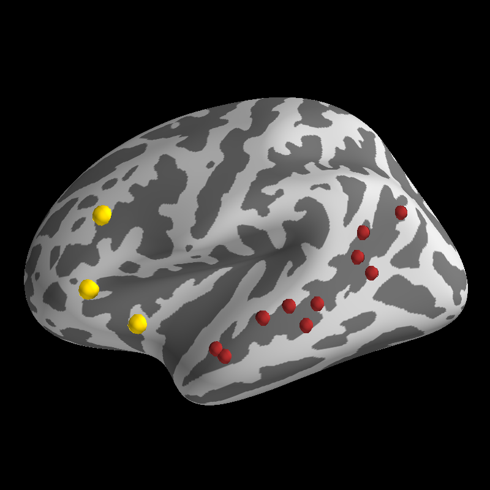

Plot Activation Foci¶
Plot spheroids at positions on the surface manifold according to coordinates or vertex ids.
import os
import os.path as op
from numpy import arange
from numpy.random import permutation
import nibabel as nib
from surfer import Brain
print(__doc__)
subject_id = "fsaverage"
subjects_dir = os.environ["SUBJECTS_DIR"]
"""
Bring up the visualization.
"""
brain = Brain(subject_id, "lh", "inflated")
"""
First we'll get a set of stereotaxic foci in the MNI
coordinate system. These might be peak activations from
a volume based analysis.
"""
coords = [[-36, 18, -3],
[-43, 25, 24],
[-48, 26, -2]]
"""
Now we plot the foci on the inflated surface. We will map
the foci onto the surface by finding the vertex on the "white"
mesh that is closest to the coordinate of each point we want
to display.
While this is not a perfect transformation, it can give you
some idea of where peaks from a volume-based analysis would
be located on the surface.
You can use any valid matplotlib color for the foci; the
default is white.
"""
brain.add_foci(coords, map_surface="white", color="gold")
"""
You can also plot foci with a set of surface vertex ids.
For instance, you might want to plot the peak activation
within an ROI for each of your indivdiual subjects over
the group activation map.
Here, we will just demonstrate with a set of randomly
choosen vertices from within the superior temporal sulcus.
First, we load in the Destrieux parcellation annotation file
and find 10 random vertices within the STS.
"""
annot_path = op.join(subjects_dir, subject_id, "label/lh.aparc.a2009s.annot")
ids, ctab, names = nib.freesurfer.read_annot(annot_path)
verts = arange(0, len(ids))
coords = permutation(verts[ids == 74])[:10]
"""
You can also control the size of the focus glpyhs.
We'll make these a little bit smaller than our
other foci.
"""
scale_factor = 0.7
"""
Finally, plot the foci using the coords_as_verts option to
center each sphereoid at its vertex id.
"""
brain.add_foci(coords, coords_as_verts=True,
scale_factor=scale_factor, color="#A52A2A")
Total running time of the script: ( 0 minutes 0.518 seconds)